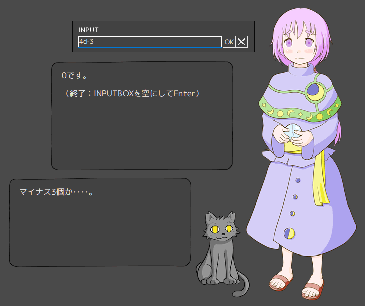

初心占い師ほたるのトークを追加しました。
「マ？」の話。
個人的には「マ？」は成立過程が想像できるというか、きっと
- やたら「マジ？」と言う人がいた
- ふとしたときに「マジ？」と言えずに「マ？」と言った
- みんながそれに対し「マ？」と思った
- みんな使い出した
という背景があるんだろうなぁ、要するに水面下でみんなが「いいね！」と思って、それが自然とシェアされた、そういう成立過程に自然なグルーヴ感あっていいなぁ、と思えて好きです。
あと「マ？」だけでは「マジ？」の略語として成立しないので、イントネーションや表情といったメタ情報が必要なあたりも人間くさくていいなと思います。
ただその一方で、あまり私の心にフィットしない省略語もあります。それは「とりま」です。
おそらく「とりあえず、まあ」が「とり、まあ」と略され、それが「とりま」になったのだと思います。
ただ、「まあ」というのは、会話中において、次に発する言葉が見つかるまでの静寂を打ち消すために発され、かつ「まあ」の「あ」の形で口を開けたままにすることで発話中であることをビジュアル面でも明示する、高度な言葉です。そして聞き手も、その「まあ」を受けて何も言わずにスタンバる、という行動を自然発生させる、そういうとても人間らしい言葉でもあるのです。
それを「とり」と結合して「とりま」とワンフレーズにしてしまったら、もともとの「まあ」の機能が死んでしまうように思うのです。
伝統を抹殺せんとするとりま勢：とりま……………………マックに行こうぜ。
伝統的なまあによる効果的発話：とりあえず…………まあ…………マクド行こか。
どうでしょうか。
ドヤ顔で「…」を8個を並べてもスルーしてもらえるのは江戸だけです。
上方では「…」は4つより多く並べると言語中枢に何らかの問題が発生していると理解され、どうしてこんなになるまで放っておいたんだと人だかりができ、それでも症状が続くとなんばグランド花月からほんわかぱっぱーを鳴らしながら救急車がやってくると聞きます。情に厚い地域だといえます。
一説によると、日本人の約八割は口呼吸らしいです。
「まあ」で口が開く様子と、口呼吸でぽかんと口を開けている様子には通じるところがあり、自分は「まあ」でお口ポカーン、相手も口呼吸でお口ポカーン、互いにお口ポカーンで会話の行方、日本の行方、世界の行方、人類の行方、終末へと流れる時の行方を見つめる、それが日本語なのではないでしょうか。
私はこの「まあ」のメタ言語的意味の重要性、それによる会話空間の雰囲気醸成のメカニズムを「お口ポカーン効果」と名付け、インターネットで広く発信することで、世界にお口ポカーンを広めてまいります。
ネットワーク更新よろしくおねがいします。
＊ ＊ ＊
そのほかの主な変更点としては二つ。一つはダイスの改良です。
「マイナス2面体」「マイナス1個」といった人智を越えたリクエストに対し、きちんといぶかしげな反応をするようになりました。
……０なの？
もう一つは、バルーンメニュー（ほたるは「その他の設定」内）への「ウィンドウの左上に移動」追加です。
起動時に私の環境でマスカレードが行方不明になってCtrl+Shift+F12でも戻ってこない場合がよくあるので、そういう時のための機能です。ただそもそもどっちも表示されない場合には使えないので、まず伝統的手法でどっちかを連れ戻してください。